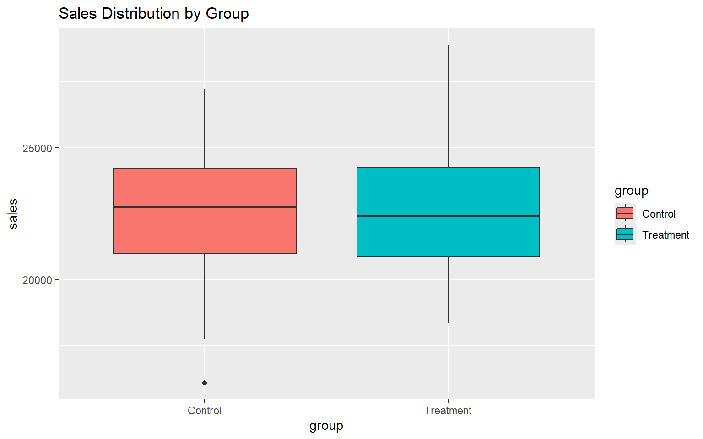
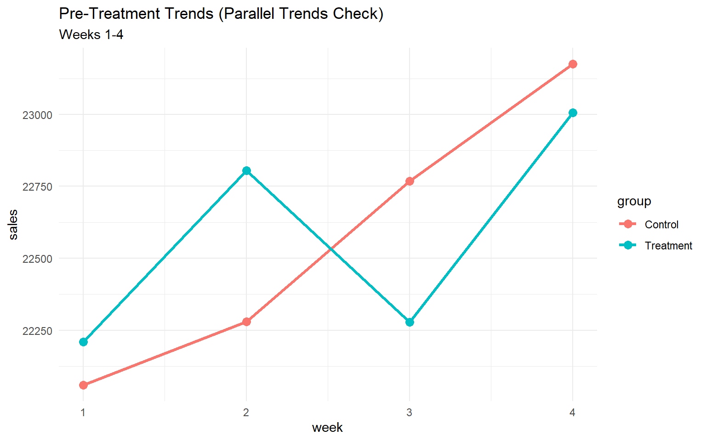
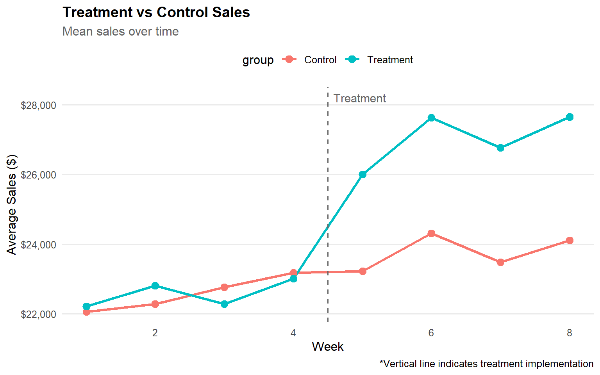

Rows: 480
Columns: 5
$ store_id <chr> "T01", "T01", "T01", "T01", "T01", "T01", "T01", "T01", "T02"…
$ group <chr> "Treatment", "Treatment", "Treatment", "Treatment", "Treatmen…
$ week <int> 1, 2, 3, 4, 5, 6, 7, 8, 1, 2, 3, 4, 5, 6, 7, 8, 1, 2, 3, 4, 5…
$ period <chr> "Pre", "Pre", "Pre", "Pre", "Post", "Post", "Post", "Post", "…
$ sales <dbl> 25105.73, 25167.54, 22865.04, 26339.08, 29417.32, 30581.67, 3…Post-Campaign Sales Analysis with Differences-in-Differences
causal inference
exploratory data analysis
Differences-in-Differences method is used to estimate the causal effect of a marketing campaign on sales.
In retail environments, randomized A/B testing is often impractical when evaluating marketing campaigns. Store selection for promotional initiatives may be driven by regional strategies, franchise agreements, or operational constraints rather than random assignment. Additionally, withholding potentially revenue-generating campaigns from stores purely for experimental purposes raises ethical and business concerns.
This analysis evaluates a sales campaign implemented across 30 treatment stores using a difference-in-differences (DiD) approach. By comparing sales trends in treatment stores against 30 control stores over an 8-week period (4 weeks pre-campaign, 4 weeks post-campaign), we can isolate the campaign’s causal effect. The DiD method accounts for baseline differences between stores and common time trends, measuring whether treatment stores experienced different sales growth compared to what would have occurred absent the intervention, captured by the control group’s trajectory.
1 Load Packages & Data
We’ll be using Tidyverse and base R to prepare our dataset and run a linear regression model.
2 Exploratory Data Analysis
We have 480 observations across 60 stores. The observations are divided into “Pre” and “Post” treatment periods as indicated in the period variable. The stores are divided into “Treatment” and “Control” groups and identified as such in the group variable. The revenue recorded for each observation is stored in the sales variable.
| Name | sales |
| Number of rows | 480 |
| Number of columns | 5 |
| _______________________ | |
| Column type frequency: | |
| character | 3 |
| numeric | 2 |
| ________________________ | |
| Group variables | None |
Variable type: character
| skim_variable | n_missing | complete_rate | min | max | empty | n_unique | whitespace |
|---|---|---|---|---|---|---|---|
| store_id | 0 | 1 | 3 | 3 | 0 | 60 | 0 |
| group | 0 | 1 | 7 | 9 | 0 | 2 | 0 |
| period | 0 | 1 | 3 | 4 | 0 | 2 | 0 |
Variable type: numeric
| skim_variable | n_missing | complete_rate | mean | sd | p0 | p25 | p50 | p75 | p100 | hist |
|---|---|---|---|---|---|---|---|---|---|---|
| week | 0 | 1 | 4.50 | 2.29 | 1.00 | 2.75 | 4.50 | 6.25 | 8.00 | ▇▃▇▃▇ |
| sales | 0 | 1 | 23985.29 | 2866.55 | 16093.51 | 21953.08 | 23921.07 | 25639.00 | 32461.19 | ▁▅▇▃▁ |
The groups are nearly identical in terms of sale pre-treatment (baseline) and show similar variability.
| group | period | mean | sd | median |
|---|---|---|---|---|
| Control | Pre | 22570.47 | 2161.540 | 22750.56 |
| Treatment | Pre | 22574.74 | 2169.698 | 22412.04 |
The groups are well-balanced and there is no indication of outliers impacting the mean.

Data Wrangling
Since we will be running regression on this data, we create dummy variables for group and period.
DiD Assumptions
For a differences-in-differences analysis, the existence of parallel is a crucial assumption.
Visual inspection reveals slight non-parallelism in pre-treatment trends, with treatment stores showing more volatility.

| group | week | sales |
|---|---|---|
| Control | 1 | 661760.8 |
| Control | 2 | 668401.4 |
| Control | 3 | 683044.3 |
| Control | 4 | 695249.5 |
| Treatment | 1 | 666273.9 |
| Treatment | 2 | 684138.7 |
| Treatment | 3 | 668358.5 |
| Treatment | 4 | 690198.0 |
To validate the parallel trends assumption, we regressed pre-treatment sales on treatment status, week, and their interaction. The interaction term was not statistically significant (β = -197.1, p = 0.428), indicating that treatment and control groups followed similar trajectories prior to the intervention. While visual inspection shows some volatility, particularly in the treatment group, these deviations fall within sampling variation and do not invalidate the DiD approach.
Call:
lm(formula = sales ~ treatment * week, data = pre_data)
Residuals:
Min 1Q Median 3Q Max
-5901.4 -1566.5 -70.2 1752.9 6401.4
Coefficients:
Estimate Std. Error t value Pr(>|t|)
(Intercept) 21611.2 480.3 44.994 <2e-16 ***
treatment 496.9 679.3 0.732 0.4652
week 383.7 175.4 2.188 0.0297 *
treatment:week -197.1 248.0 -0.794 0.4277
---
Signif. codes: 0 '***' 0.001 '**' 0.01 '*' 0.05 '.' 0.1 ' ' 1
Residual standard error: 2148 on 236 degrees of freedom
Multiple R-squared: 0.02447, Adjusted R-squared: 0.01207
F-statistic: 1.973 on 3 and 236 DF, p-value: 0.1187Checking whether week 4 (last pre-period) shows divergence or not, we find there was no significant difference observed between control and treatment.
Welch Two Sample t-test
data: sales by group
t = 0.31609, df = 57.987, p-value = 0.7531
alternative hypothesis: true difference in means between group Control and group Treatment is not equal to 0
95 percent confidence interval:
-897.942 1234.708
sample estimates:
mean in group Control mean in group Treatment
23174.98 23006.60 Finally, we confirm we have complete data for all stores. We’ve observed the same stores throughout the study period, so the composition of our dataset is stable.
| store_id | n |
|---|
DiD assumptions are met and we can proceed with the analysis.
3 Differences-in-Differences
Over time both groups sales are shown to have increased. However, compared to the Control group that serves as our baseline without intervention, the Treatment group has shown a much great increase in sales. With DiD, we will be assessing the impact over time and confirming the difference is not due to random variation.

4 Model 1 - Without Control Variables
Model 1 estimates DiD by looking at the interaction term treatment * post. Treatment stores sold only $4 more than control at baseline (not significant), confirming once more that groups were balanced before intervention.
Average sales for control group in pre-period is $22,570 and even without treatment, sales increased by $1,210.
However, Treatment stores gained an additional $3,230 beyond the natural trend, which is highly significant (p < 0.001). While both groups experienced sales increases during the post-period, treatment stores gained an additional $3,230 beyond the natural market trend captured by the control group.
This is strong evidence of campaign impact and explains 40% of variation.
Call:
lm(formula = sales ~ treatment * post, data = sales)
Residuals:
Min 1Q Median 3Q Max
-6477.0 -1584.6 46.9 1594.8 6308.1
Coefficients:
Estimate Std. Error t value Pr(>|t|)
(Intercept) 22570.467 202.857 111.263 < 2e-16 ***
treatment 4.276 286.882 0.015 0.988
post 1210.481 286.882 4.219 2.93e-05 ***
treatment:post 3229.774 405.713 7.961 1.26e-14 ***
---
Signif. codes: 0 '***' 0.001 '**' 0.01 '*' 0.05 '.' 0.1 ' ' 1
Residual standard error: 2222 on 476 degrees of freedom
Multiple R-squared: 0.4028, Adjusted R-squared: 0.399
F-statistic: 107 on 3 and 476 DF, p-value: < 2.2e-16Model 2 - With Control Variables
We can improve our model by adding fixed effects store_id_fct and week_fct, controlling for baseline differences between stores (e.g location) and time shocks (e.g seasonality). Since DiD is observational data without random assignment, control variable play a crucial role in fitting the model.
Model 2 has increased the adjusted R-squared statistic from 0.4 to 0.81, and therefore is able to explain over 80% of the variation by estimating 97 parameters instead of 4.
Treatment effect also increased from $3,230 to $3,982.
The treatment:post:store_id_fctTXX coefficients show how each treatment store’s effect differs from the $3,982 average Most store-specific interactions are not significant, meaning the treatment effect is fairly homogeneous across stores.
Call:
lm(formula = sales ~ treatment:post * store_id_fct + week_fct,
data = sales)
Residuals:
Min 1Q Median 3Q Max
-3330.0 -749.0 11.3 768.8 2955.6
Coefficients: (30 not defined because of singularities)
Estimate Std. Error t value Pr(>|t|)
(Intercept) 24193.491 466.040 51.913 < 2e-16 ***
store_id_fctC02 -4655.642 619.098 -7.520 3.93e-13 ***
store_id_fctC03 -1685.300 619.098 -2.722 0.006781 **
store_id_fctC04 727.535 619.098 1.175 0.240664
store_id_fctC05 -3597.876 619.098 -5.811 1.30e-08 ***
store_id_fctC06 -3715.736 619.098 -6.002 4.53e-09 ***
store_id_fctC07 -1164.183 619.098 -1.880 0.060806 .
store_id_fctC08 -2275.050 619.098 -3.675 0.000272 ***
store_id_fctC09 -4250.897 619.098 -6.866 2.67e-11 ***
store_id_fctC10 -1651.965 619.098 -2.668 0.007947 **
store_id_fctC11 77.381 619.098 0.125 0.900597
store_id_fctC12 -2331.401 619.098 -3.766 0.000192 ***
store_id_fctC13 -1478.990 619.098 -2.389 0.017380 *
store_id_fctC14 -2282.185 619.098 -3.686 0.000260 ***
store_id_fctC15 932.096 619.098 1.506 0.133002
store_id_fctC16 -3658.644 619.098 -5.910 7.58e-09 ***
store_id_fctC17 -3180.551 619.098 -5.137 4.45e-07 ***
store_id_fctC18 -1090.210 619.098 -1.761 0.079042 .
store_id_fctC19 -6256.712 619.098 -10.106 < 2e-16 ***
store_id_fctC20 -1056.365 619.098 -1.706 0.088764 .
store_id_fctC21 -1351.421 619.098 -2.183 0.029651 *
store_id_fctC22 -4972.286 619.098 -8.031 1.20e-14 ***
store_id_fctC23 -1836.072 619.098 -2.966 0.003209 **
store_id_fctC24 -2594.873 619.098 -4.191 3.45e-05 ***
store_id_fctC25 -956.014 619.098 -1.544 0.123365
store_id_fctC26 -1019.104 619.098 -1.646 0.100561
store_id_fctC27 -2089.431 619.098 -3.375 0.000814 ***
store_id_fctC28 -930.511 619.098 -1.503 0.133660
store_id_fctC29 -532.661 619.098 -0.860 0.390116
store_id_fctC30 -2974.436 619.098 -4.804 2.23e-06 ***
store_id_fctT01 237.164 762.438 0.311 0.755924
store_id_fctT02 -3833.598 762.438 -5.028 7.62e-07 ***
store_id_fctT03 -1689.611 762.438 -2.216 0.027274 *
store_id_fctT04 -3471.696 762.438 -4.553 7.10e-06 ***
store_id_fctT05 -1074.476 762.438 -1.409 0.159569
store_id_fctT06 -4553.536 762.438 -5.972 5.34e-09 ***
store_id_fctT07 -1066.701 762.438 -1.399 0.162603
store_id_fctT08 -1303.461 762.438 -1.710 0.088151 .
store_id_fctT09 184.584 762.438 0.242 0.808835
store_id_fctT10 -4869.798 762.438 -6.387 4.90e-10 ***
store_id_fctT11 -2779.476 762.438 -3.646 0.000304 ***
store_id_fctT12 -1501.711 762.438 -1.970 0.049603 *
store_id_fctT13 1437.122 762.438 1.885 0.060200 .
store_id_fctT14 -2187.236 762.438 -2.869 0.004349 **
store_id_fctT15 -2214.043 762.438 -2.904 0.003899 **
store_id_fctT16 947.732 762.438 1.243 0.214618
store_id_fctT17 -4349.396 762.438 -5.705 2.34e-08 ***
store_id_fctT18 -3300.891 762.438 -4.329 1.91e-05 ***
store_id_fctT19 -675.691 762.438 -0.886 0.376053
store_id_fctT20 -470.008 762.438 -0.616 0.537961
store_id_fctT21 -4045.206 762.438 -5.306 1.90e-07 ***
store_id_fctT22 -5130.791 762.438 -6.729 6.23e-11 ***
store_id_fctT23 -1555.946 762.438 -2.041 0.041961 *
store_id_fctT24 -4532.813 762.438 -5.945 6.22e-09 ***
store_id_fctT25 -2840.423 762.438 -3.725 0.000224 ***
store_id_fctT26 448.164 762.438 0.588 0.557010
store_id_fctT27 -3789.563 762.438 -4.970 1.01e-06 ***
store_id_fctT28 -2891.156 762.438 -3.792 0.000174 ***
store_id_fctT29 -1593.356 762.438 -2.090 0.037293 *
store_id_fctT30 742.594 762.438 0.974 0.330685
week_fct2 408.424 226.063 1.807 0.071597 .
week_fct3 389.469 226.063 1.723 0.085725 .
week_fct4 956.879 226.063 4.233 2.89e-05 ***
week_fct5 868.373 252.746 3.436 0.000656 ***
week_fct6 2222.942 252.746 8.795 < 2e-16 ***
week_fct7 1372.603 252.746 5.431 9.99e-08 ***
week_fct8 2132.776 252.746 8.438 6.68e-16 ***
treatment:post 3982.442 890.010 4.475 1.01e-05 ***
treatment:post:store_id_fctC02 NA NA NA NA
treatment:post:store_id_fctC03 NA NA NA NA
treatment:post:store_id_fctC04 NA NA NA NA
treatment:post:store_id_fctC05 NA NA NA NA
treatment:post:store_id_fctC06 NA NA NA NA
treatment:post:store_id_fctC07 NA NA NA NA
treatment:post:store_id_fctC08 NA NA NA NA
treatment:post:store_id_fctC09 NA NA NA NA
treatment:post:store_id_fctC10 NA NA NA NA
treatment:post:store_id_fctC11 NA NA NA NA
treatment:post:store_id_fctC12 NA NA NA NA
treatment:post:store_id_fctC13 NA NA NA NA
treatment:post:store_id_fctC14 NA NA NA NA
treatment:post:store_id_fctC15 NA NA NA NA
treatment:post:store_id_fctC16 NA NA NA NA
treatment:post:store_id_fctC17 NA NA NA NA
treatment:post:store_id_fctC18 NA NA NA NA
treatment:post:store_id_fctC19 NA NA NA NA
treatment:post:store_id_fctC20 NA NA NA NA
treatment:post:store_id_fctC21 NA NA NA NA
treatment:post:store_id_fctC22 NA NA NA NA
treatment:post:store_id_fctC23 NA NA NA NA
treatment:post:store_id_fctC24 NA NA NA NA
treatment:post:store_id_fctC25 NA NA NA NA
treatment:post:store_id_fctC26 NA NA NA NA
treatment:post:store_id_fctC27 NA NA NA NA
treatment:post:store_id_fctC28 NA NA NA NA
treatment:post:store_id_fctC29 NA NA NA NA
treatment:post:store_id_fctC30 NA NA NA NA
treatment:post:store_id_fctT01 528.375 1238.196 0.427 0.669816
treatment:post:store_id_fctT02 -1073.918 1238.196 -0.867 0.386308
treatment:post:store_id_fctT03 -91.210 1238.196 -0.074 0.941317
treatment:post:store_id_fctT04 -683.833 1238.196 -0.552 0.581078
treatment:post:store_id_fctT05 -1131.640 1238.196 -0.914 0.361322
treatment:post:store_id_fctT06 672.355 1238.196 0.543 0.587438
treatment:post:store_id_fctT07 -1084.140 1238.196 -0.876 0.381807
treatment:post:store_id_fctT08 -1743.992 1238.196 -1.408 0.159796
treatment:post:store_id_fctT09 -2588.243 1238.196 -2.090 0.037247 *
treatment:post:store_id_fctT10 -1741.467 1238.196 -1.406 0.160400
treatment:post:store_id_fctT11 -666.537 1238.196 -0.538 0.590673
treatment:post:store_id_fctT12 529.838 1238.196 0.428 0.668957
treatment:post:store_id_fctT13 852.123 1238.196 0.688 0.491746
treatment:post:store_id_fctT14 -409.510 1238.196 -0.331 0.741028
treatment:post:store_id_fctT15 -1476.402 1238.196 -1.192 0.233850
treatment:post:store_id_fctT16 -602.962 1238.196 -0.487 0.626559
treatment:post:store_id_fctT17 -907.370 1238.196 -0.733 0.464119
treatment:post:store_id_fctT18 -2080.710 1238.196 -1.680 0.093688 .
treatment:post:store_id_fctT19 -1055.512 1238.196 -0.852 0.394492
treatment:post:store_id_fctT20 -576.597 1238.196 -0.466 0.641713
treatment:post:store_id_fctT21 -2081.562 1238.196 -1.681 0.093554 .
treatment:post:store_id_fctT22 391.973 1238.196 0.317 0.751744
treatment:post:store_id_fctT23 -2006.085 1238.196 -1.620 0.106019
treatment:post:store_id_fctT24 -967.810 1238.196 -0.782 0.434916
treatment:post:store_id_fctT25 -1268.712 1238.196 -1.025 0.306177
treatment:post:store_id_fctT26 244.275 1238.196 0.197 0.843711
treatment:post:store_id_fctT27 5.428 1238.196 0.004 0.996505
treatment:post:store_id_fctT28 -591.757 1238.196 -0.478 0.632981
treatment:post:store_id_fctT29 -974.415 1238.196 -0.787 0.431790
treatment:post:store_id_fctT30 NA NA NA NA
---
Signif. codes: 0 '***' 0.001 '**' 0.01 '*' 0.05 '.' 0.1 ' ' 1
Residual standard error: 1238 on 383 degrees of freedom
Multiple R-squared: 0.8508, Adjusted R-squared: 0.8134
F-statistic: 22.75 on 96 and 383 DF, p-value: < 2.2e-16Discussion
The consistency of high treatment effect ($3,230 vs $3,982) and low p-values (p < 0.001) demonstrates the campaign’s positive impact is robust across model specifications. That said, the inclusion of confounders is shown to greatly improve model fit (0.4 vs 0.81).
Model 1 is shown to have omitted variable bias:
Doesn’t account for high-performing vs low-performing stores
Doesn’t control for week-to-week variation (e.g., week 6 had big sales boost)
Treatment effect is “contaminated” by these confounders
On the other hand, Model 2 isolates the true effect by comparing:
Each store to itself (within-store comparison)
Same week across groups (within-week comparison)
Model 2 should be preferred for estimating the outcome.
5 Campaign Impact
Based on Model 2, the incremental revenue generated by the treatment is as follows:
Per store per week: $3,982
Per store (4 weeks): $15,930
Total (30 stores): $477,389
[1] 3982.442[1] 15929.77[1] 4778936 Conclusion
This difference-in-differences analysis demonstrates that the sales campaign generated a significant and substantial impact. Treatment stores experienced an average increase of $3,982 per week compared to control stores, representing approximately $477,000 in incremental revenue across 30 stores over the four-week post-campaign period. This effect remained highly significant (p < 0.001) even after controlling for baseline store differences and weekly market fluctuations, providing strong evidence of the campaign’s causal impact.
Critically, the treatment effect proved consistent across nearly all stores, with only one location showing a significantly different response. This homogeneity indicates the campaign is scalable and replicable. Marketing teams can confidently deploy this strategy to additional locations with predictable results.
The fixed effects model (Model 2) substantially outperformed the simple difference-in-differences specification, explaining 81% of sales variation compared to just 40% in the basic model. By isolating the true campaign effect from confounding factors like store size, location advantages, and seasonal timing, Model 2 provides the most credible estimate for business decision-making. The robustness of results across specifications—ranging from $3,230 to $3,982 depending on controls—further validates the campaign’s effectiveness and supports broader implementation.